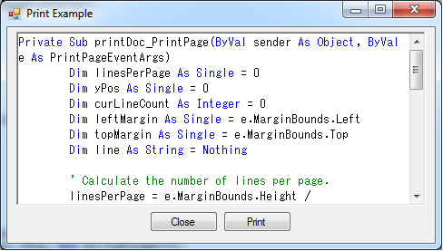

This sample uses the systems default printer to Print Text. The PrintDocument class has been used for this purpose so external reference of any library is not required.
The sample uses the following libraries,
System.IO
System.Drawing
System.Drawing.Printing
So no building configuration or reference addition is required
Description
The sample contains a simple windows form with RictTexBox & Button Controls.
It uses PrintDocument, Font Classes for printing text to the printer.
This sample mainly concentrates on printing a plain text to the systems default printer.
The text typed in the RichTextBox can be printed by clicking Print Button.
PrintDocument class is used in the sample for printing the text.
PrintDocumnt performs printing by calling the system's default printer.
PrintDocument Page Print Event handler takes care of the printing operation.
In this sample, based on the no of lines in the RichTextBox, the no of pages
to be printed has been calculted using the selected Font size.

Dim printDoc As New PrintDocument()
printDoc.Print()
While curLineCount < linesPerPage
If (RichTextBox1.Lines.Length - 1) < totalLineCount Then
line = Nothing
Exit While
End If
line = RichTextBox1.Lines(totalLineCount)
yPos = topMargin + curLineCount * printFont.GetHeight(e.Graphics)
e.Graphics.DrawString(line, printFont, Brushes.Black, leftMargin, yPos, New StringFormat())
curLineCount += 1
totalLineCount += 1
End While
Dim printDoc As New PrintDocument() printDoc.Print() While curLineCount < linesPerPage If (RichTextBox1.Lines.Length - 1) < totalLineCount Then line = Nothing Exit While End If line = RichTextBox1.Lines(totalLineCount) yPos = topMargin + curLineCount * printFont.GetHeight(e.Graphics) e.Graphics.DrawString(line, printFont, Brushes.Black, leftMargin, yPos, New StringFormat()) curLineCount += 1 totalLineCount += 1 End While
For more information on PrintDocument, see